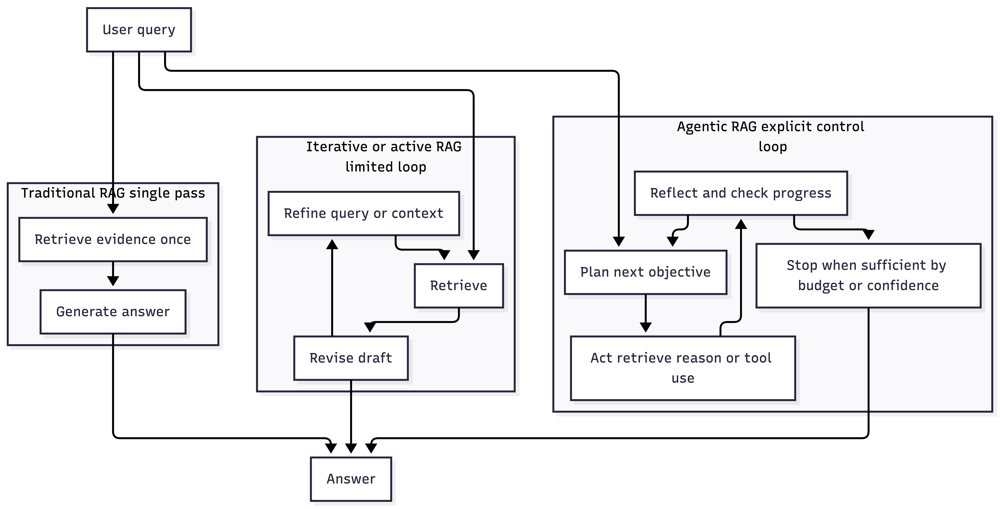
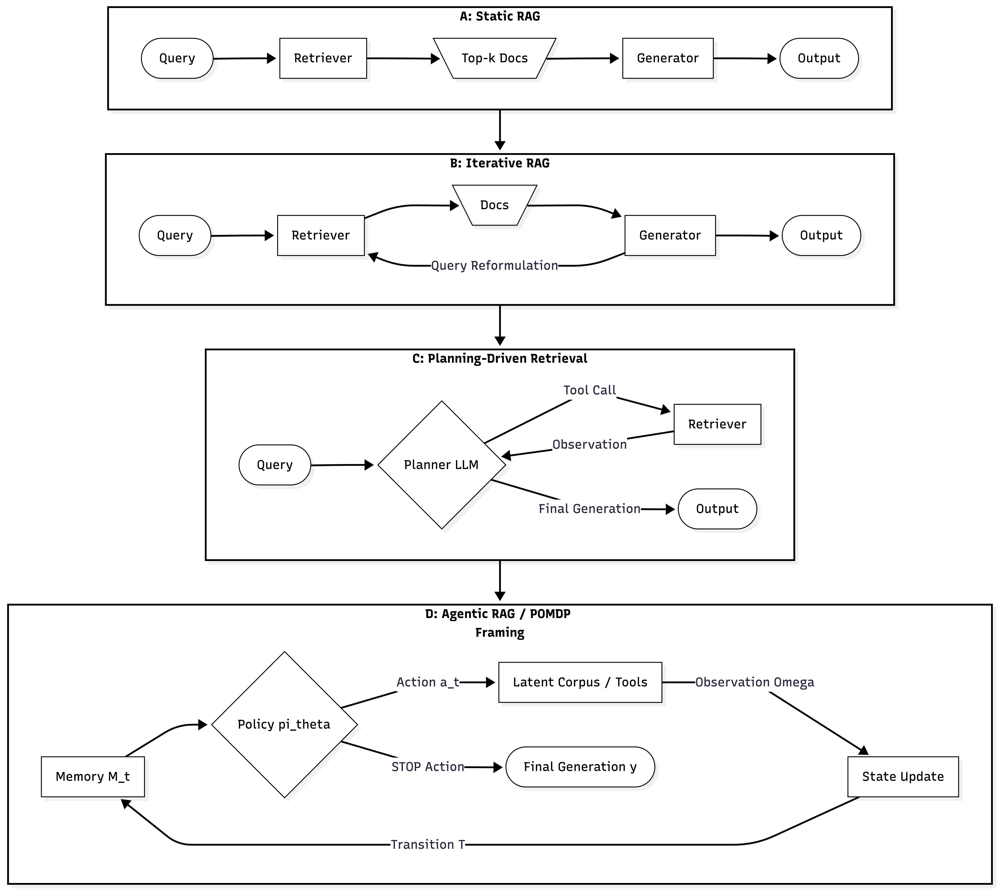
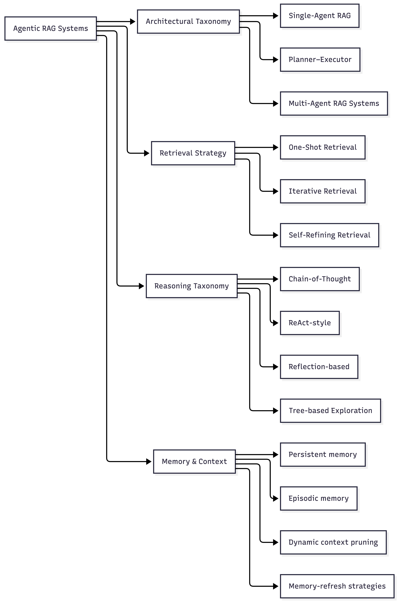
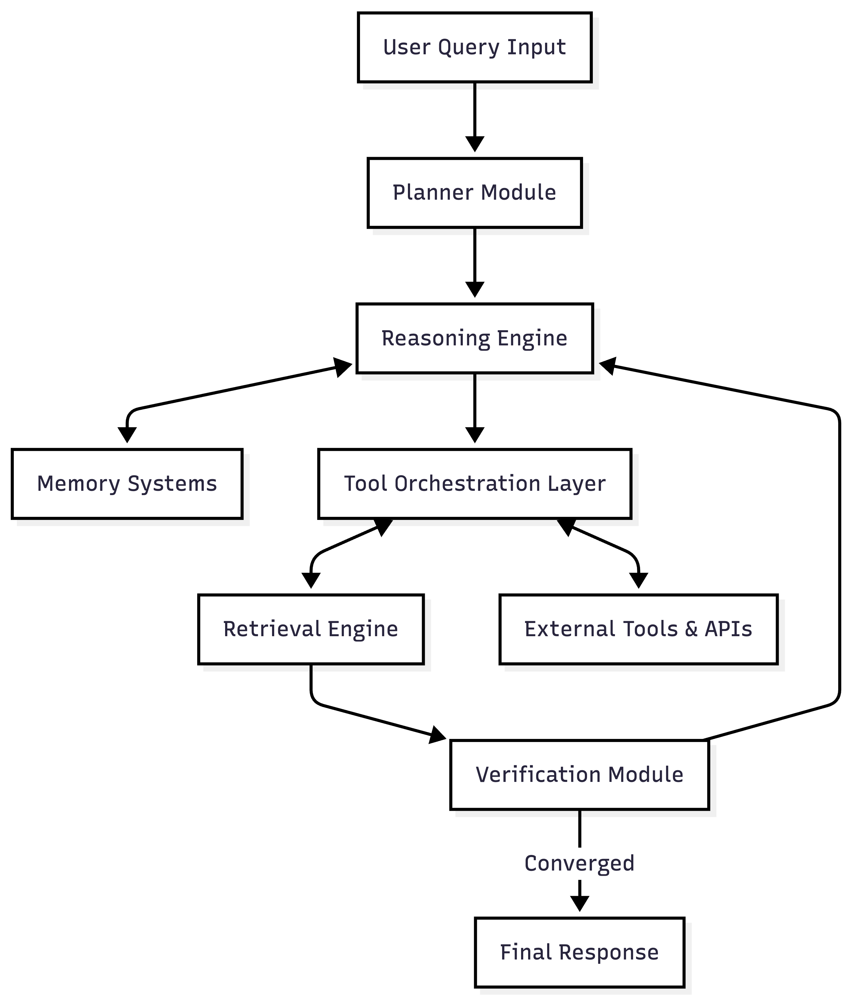
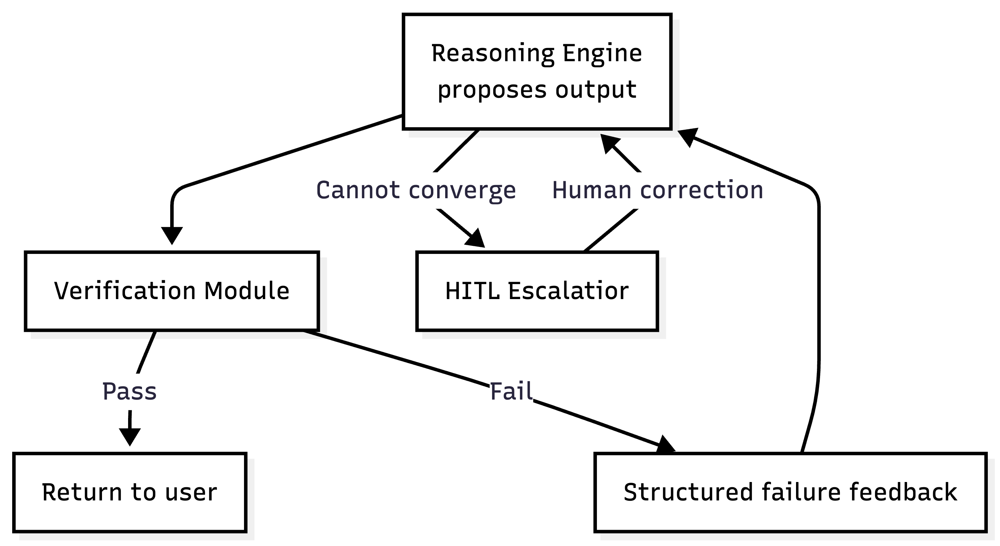
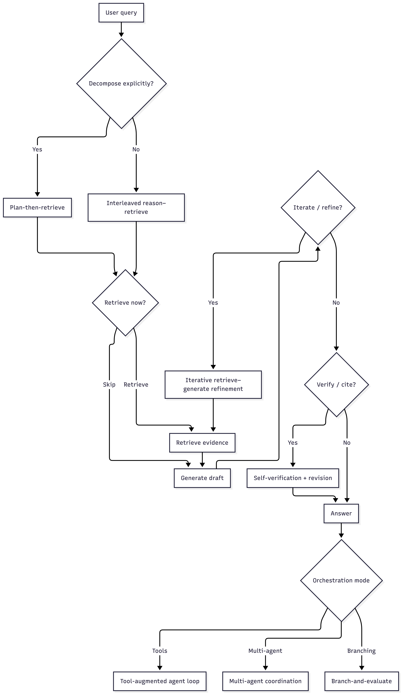
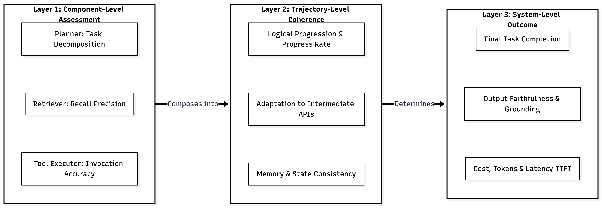
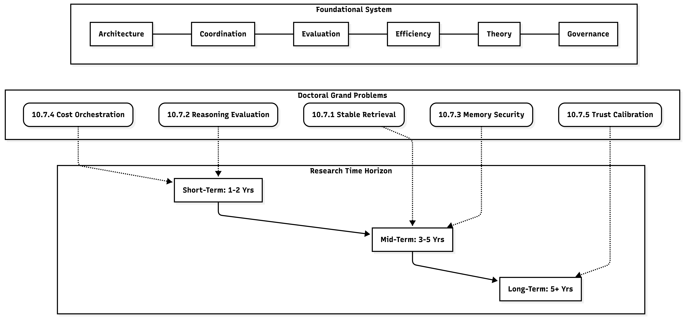

page_001_img_000.png
Page 1 | 5174x2635
Type: table
Keywords: retrieval, reasoning, this

page_004_img_000.png
Page 4 | 5615x5004
Type: table
Keywords: agentic, state, that

page_006_img_000.png
Page 6 | 3864x5830
Type: illustration
Keywords: retrieval, taxonomy, retrieved

page_008_img_000.png
Page 8 | 2778x3260
Type: table
Keywords: retrieval, topology, reasoning

page_010_img_000.png
Page 10 | 2873x1570
Type: table
Keywords: execution, tool, orchestration

page_011_img_000.png
Page 11 | 4753x8192
Type: table
Keywords: retrieval, reasoning, query

page_015_img_000.png
Page 15 | 6020x2090
Type: wide_diagram
Keywords: agentic, systems, tool

page_019_img_000.png
Page 19 | 6568x3055
Type: wide_diagram
Keywords: memory, retrieval, context